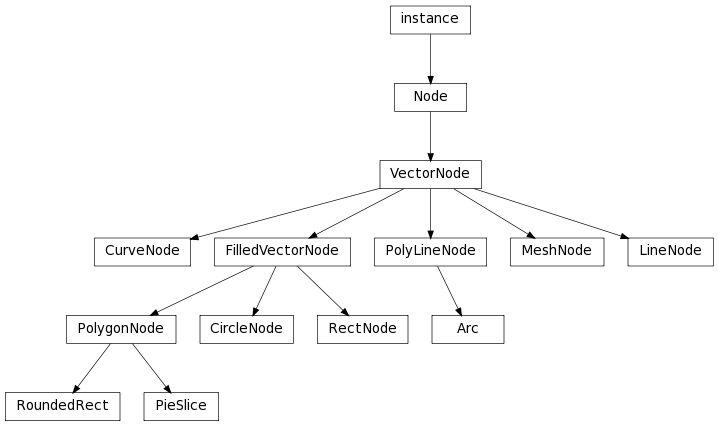

Bases: libavg.avg.FilledVectorNode
A circle. The reference point for a circle is it’s center.
The radius of the circle in pixels.
Bases: libavg.avg.VectorNode
A cubic bezier curve (http://en.wikipedia.org/wiki/Bezier_curve). pos1 and pos4 are the two endpoints of the curve. pos2 and pos3 are control points.
Bases: libavg.avg.VectorNode
Base class for vector nodes which have a filled area and a border. The area can be filled either with a solid color (fillcolor) or with a texture loaded from a file (filltexhref) or taken from a bitmap object (setFillBitmap()).
An image file to use as a texture for the area of the node.
Sets a bitmap to use as a fill texture. Sets filltexhref to an empty string.
Bases: libavg.avg.VectorNode
A line. pos1 and pos2 are the two endpoints of the line.
Bases: libavg.avg.VectorNode
This is a generalized mesh of textured triangles. See https://www.libavg.de/wiki/ProgrammersGuide/MeshNode for an example.
Bases: libavg.avg.FilledVectorNode
A closed figure bounded by a number of line segments, optionally filled. Filled polygons may not be self-intersecting.
The method by which line segments are joined together. Valid values are bevel and miter.
A sequence (list or tuple) of pixel positions.
A sequence of float texture coordinates corresponding to the border positions.
Bases: libavg.avg.VectorNode
A figure similar to a PolygonNode, but not closed and never filled.
The method by which line segments are joined together. Valid values are bevel and miter.
A sequence (list or tuple) of pixel positions.
A sequence of float texture coordinates corresponding to the border positions.
Bases: libavg.avg.FilledVectorNode
A rectangle that can be filled.
The angle that the rectangle is rotated to in radians. 0 is unchanged, 3.14 is upside-down. The rectangle is rotated around it’s center.
The position of the top left corner of the rectangle.
Bases: libavg.avg.Node
Base class for all nodes that draw geometrical primitives. All vector nodes support configurable stroke width. Strokes can be filled either with a solid color (color) or with a texture loaded from a file (texhref) or taken from a bitmap object (setBitmap()).
The method of compositing the node with the nodes under it. Valid values are blend, add, min and max. For min and max blend modes, opacity is ignored.
The color of the strokes in standard html color notation: "FF0000" is red, "00FF00" green, etc.
The width of the strokes in the vector. For lines, this is the line width. For rectangles, it is the width of the outline, etc.
An image file to use as a texture for the node.
Bases: libavg.avg.PolyLineNode
An unfilled arc (incomplete circle) from startangle to endangle. pos is the center of the circle.
Bases: libavg.avg.PolygonNode
An arc (incomplete circle) from startangle to endangle connected to the center of the circle. pos is the center of the circle. A PieSlice can be filled.